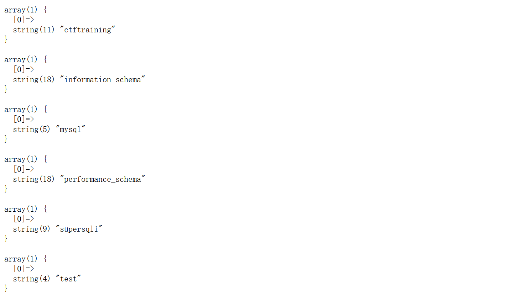

攻防世界-supersqli
最后更新时间:
文章总字数:
预计阅读时间:
题目描述：
随便注
题目解题：
根据题目很显然是sql注入了
我们打开题目看看
正常输入1，也正常回显，随之输入1’发现报错，证实存在sql注入，且为单引号闭合
这里接着测试几波，发现#可以成功注释内容，接着先判断列数，根据报错情况，发现为2列
接着联合注入一下
1 | |
发现被正则过滤了，并且大小写，双写绕过也不行，update也过滤了，那我们尝试一下extract报错注入
1 | |
成功执行！
继续干
1 | |
但又想到，关键词依旧是被过滤的，还是行不通，没思路了，看了wp发现，居然忘了堆叠注入，那就熟悉一下
1 | |

1 | |
1 | |
这里注意：纯数字为表名，要用反引号包裹
找到flag，到这一步就头疼了，本来要select的，不过被过滤了，思路没了，继续看wp，方法真多啊
方法一：sql预编译
参考：预编译
设置参数
1 | |
执行预编译SQL语句
1 | |
合起来为
1 | |
。。。set也过滤了，不过幸好可以大小写绕过
1 | |
拿到flag，这里也是因为这道题开启了sql预编译，不然这方法行不通
方法二：改列名
我们查询words列发现结构大致相同，由于注入框的查询是对列id的搜索，此时参考两个表的列名，需要将flag列名改为能够查找的id列（修改包括名称和数据类型）。
1 | |
接下来输入：
1 | |
GPT分析一波上述sql语句
1 | |
那这里我们直接万能语句1’ or 1=1#就可以了，毕竟flag现在在id字段里，但这里似乎flag的id字段默认为0了，以至于我们可以查出来，但GPT说这里默认应为null。不过使用万能语句，即可查询到sql中所有字段数对应的数据
方法三：改列名-另类方法
第二个方法是将两个表列名互换，查询语句不变的情况下，会直接查询words表中内容。
RENAME TABLE tbl_name TO new_tbl_name 将表tbl_name的名字改成new_tbl_name。
由于注入框的查询是对列id的搜索，此时参考两个表的列名，需要将flag列名改为能够查找的id列（修改包括名称和数据类型）。
1 | |
具体为什么修改为CHARACTER SET utf8 COLLATE utf8_general_ci NOT NULL就是数据库数据类型的问题了。
将操作连贯起来，构造Payload。
1’;RENAME TABLE words TO word;RENAME TABLE 1919810931114514 TO words;ALTER TABLE words CHANGE flag id VARCHAR(100) CHARACTER SET utf8 COLLATE utf8_general_ci NOT NULL;SHOW columns FROM words;
1';RENAME TABLE `words` TO `word`;RENAME TABLE `1919810931114514` TO `words`;ALTER TABLE `words` CHANGE `flag` `id` VARCHAR(100) CHARACTER SET utf8 COLLATE utf8_general_ci NOT NULL;SHOW columns FROM words;
到这里我们的表列名就已经修改完毕，此时还会输出修改完成的words列名，最后通过万能钥匙1’ or ‘1’='1即可得到输出。